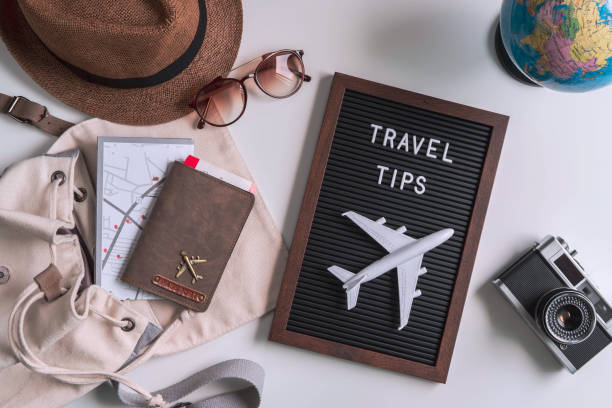

Essential Travel Tips for a Memorable Journey

"Traveling—it leaves you speechless, then turns you into a storyteller."
Traveling is one of the most enriching experiences in life, offering an opportunity to explore new cultures, meet diverse people, and create unforgettable memories. However, proper planning can make your journey smoother and more enjoyable. Whether you are embarking on a solo adventure, a romantic getaway, or a family vacation, taking the time to plan ahead ensures a stress-free experience. From choosing the right destination to understanding local customs, small details can make a big difference.
Another crucial aspect of traveling is safety. Keeping digital and physical copies of essential documents, understanding local laws, and staying updated on travel advisories can prevent unexpected troubles. Additionally, managing finances wisely, using travel cards, and setting a budget help avoid overspending. To truly immerse yourself in a destination, be open to new experiences, interact with locals, and embrace their culture. Traveling is not just about visiting new places; it is about broadening perspectives and making lifelong memories.
Top Travel Tips
- Plan Ahead: Research your destination, book accommodations in advance, and create a rough itinerary.
- Pack Smart: Carry only essentials and consider the weather and cultural norms of your destination.
- Stay Safe: Keep copies of important documents, avoid unsafe areas, and be aware of local scams.
- Respect Local Culture: Learn basic phrases, understand customs, and be respectful to the locals.
- Manage Your Budget: Keep track of your expenses, use travel cards, and look for budget-friendly options.
Quick Travel Guide
| Aspect |
Recommendation |
| Best Time to Travel |
Off-season for budget trips, peak season for best weather |
| Essential Apps |
Google Maps, Airbnb, TripAdvisor, Uber |
| Must-Have Items |
Power bank, first-aid kit, travel insurance, snacks |
| Common Mistakes |
Overpacking, not informing banks about travel, ignoring local laws |
Travel Tips by Experience Level
| Traveler Level |
Tips |
| Beginners |
- Plan Ahead: Research your destination, including local customs, weather, and safety tips.
- Pack Light: Stick to essentials and avoid overpacking. Use a checklist to stay organized.
- Stay Connected: Get a local SIM card or eSIM for reliable internet access.
- Travel Insurance: Always have travel insurance to cover unexpected situations.
- Stay Safe: Keep copies of important documents and avoid displaying valuables.
|
| Intermediate Travelers |
- Optimize Packing: Use packing cubes and invest in lightweight, durable luggage.
- Explore Offbeat Paths: Venture beyond tourist hotspots to discover hidden gems.
- Learn Basic Phrases: Familiarize yourself with key phrases in the local language.
- Use Travel Apps: Leverage apps for navigation, currency conversion, and itinerary planning.
- Be Flexible: Embrace spontaneity and adapt to changes in your travel plans.
|
| Professional Travelers |
- Maximize Rewards: Stick to loyalty programs for airlines and hotels to earn perks.
- Streamline Packing: Keep a pre-packed travel kit with essentials for quick trips.
- Stay Productive: Use airport lounges and carry portable chargers for work on the go.
- Cultural Immersion: Engage with locals and participate in cultural experiences.
- Health First: Prioritize self-care with proper hydration, rest, and exercise during trips.
|
Whether you're exploring breathtaking mountains, vibrant cities, or serene beaches, these tips will ensure a stress-free and exciting journey. So pack your bags, embrace new cultures, and create stories that last a lifetime!
Essential Travel Tips for a Memorable Journey
Beginner Travel Tips
- Essential items every first-time traveler needs in their bag.
- How to plan your first solo trip without feeling overwhelmed.
- Budgeting hacks for your first international trip.
Family Travel Tips
- Traveling with kids: How to keep them entertained on long journeys.
- Packing essentials for family vacations.
- Stress-free travel tips for parents with infants.
Travel Safety Tips
- How to keep your belongings secure while exploring new cities.
- Essential health precautions to take before traveling abroad.
- Using travel insurance: When and why it’s a lifesaver.
Sustainable Travel
- Eco-friendly travel practices to reduce your carbon footprint.
- How to choose sustainable accommodations and activities.
- The benefits of slow travel for both the environment and your experience.
Tech-Savvy Traveler Tips
- Must-have travel apps for navigation, budgeting, and planning.
- How to stay connected abroad: SIM cards, Wi-Fi, and eSIM options.
- Essential gadgets for modern travelers: Portable chargers, adapters, and more.
Travel Tips by Mode of Transport
- Road trip planning: Routes, stops, and entertainment ideas.
- Flying tips: How to survive long-haul flights comfortably.
- Train travel 101: Making the most of scenic routes.
Advanced Travel Tips
- How to maximize airline rewards and hotel loyalty programs.
- Packing like a pro: Hacks for light and efficient packing.
- Navigating cultural differences as an experienced traveler.
Destination-Specific Travel Tips
- How to prepare for high-altitude destinations like the Himalayas.
- Beach vacations: What to pack and how to protect your skin.
- Exploring urban jungles: Metro systems, local cuisine, and hidden spots.
Packing Tips
- The ultimate minimalist packing list for any trip.
- How to pack your carry-on for maximum efficiency.
- Essential packing tips for different climates (tropical, cold, etc.).
- Packing for adventure trips: Hiking, scuba diving, and more.
- How to prepare a travel first-aid kit.
Solo Travel
- How to overcome fears and enjoy your first solo adventure.
- Tips for making friends while traveling solo.
- Staying safe and confident as a solo traveler.
Cultural Travel Tips
- How to respectfully engage with local cultures while traveling.
- Learning about and adapting to cultural etiquette abroad.
- The art of bartering in local markets: Dos and don'ts.
Foodie Travel Tips
- How to find the best local food spots when traveling.
- Food safety tips for trying street food around the world.
- Navigating dietary restrictions while traveling abroad.
Luxury Travel
- Making the most of luxury hotel stays and services.
- How to find first-class flight deals without breaking the bank.
- Tips for curating a high-end travel itinerary.
Budget Travel Tips
- How to travel on a shoestring budget without compromising experiences.
- Saving money on flights, accommodation, and attractions.
- Ways to enjoy luxury experiences on a budget.
Adventure Travel
- Tips for planning a trekking or camping trip.
- How to choose the right gear for outdoor adventures.
- Safety tips for adrenaline junkies: Skydiving, bungee jumping, etc.
Health & Wellness
- Managing jet lag like a pro: Before, during, and after your flight.
- Staying fit while traveling: Exercises you can do anywhere.
- Mental health tips for long-term travelers.
Digital Nomad Tips
- How to set up a productive workspace while traveling.
- Managing time zones and schedules as a digital nomad.
- Tips for balancing work and exploration in new destinations.
Travel Photography
- Capturing the best travel shots: Composition and lighting tips.
- How to safely store your travel photos on the go.
- Top gadgets for travel photographers.
Specialty Travel
- Tips for pet-friendly travel: Planning trips with your furry friends.
- How to prepare for a cruise vacation: What to bring and expect.
- Traveling for festivals and events: Planning and preparation.
Seasonal Travel Tips
- Tips for winter travel: Staying warm and dealing with snow delays.
- Planning a perfect summer getaway: Beaches, gear, and sun protection.
- How to enjoy spring bloom festivals in different parts of the world.
- Monsoon travel tips: Staying dry and enjoying the rain-drenched scenery.
- Packing essentials for autumn/fall trips.
Traveling for Events
- How to prepare for large-scale events like the Olympics or the World Cup.
- Tips for music festival travel: Packing, accommodation, and safety.
- Planning a pilgrimage: Tips for spiritual or religious journeys.
- How to navigate a city during a major cultural event or parade.
Traveling with a Purpose
- Volunteering abroad: Tips for choosing ethical programs.
- Study abroad travel tips for students and families.
- How to plan a wellness retreat in peaceful destinations.
- Tips for adventure travel with a cause, like charity hikes or runs.
Unique Travel Tips
- How to plan a surprise trip for someone special.
- Best tips for multi-generational travel with grandparents and kids.
- How to organize and enjoy themed vacations, like culinary tours or wine tastings.
- Traveling to remote destinations: What you need to know.
Travel Photography and Content Creation
- Tips for creating travel vlogs and documenting your journey.
- Best practices for ethical and respectful travel photography.
- How to manage gear and stay creative while traveling light.
- Using drones while traveling: Legal and technical tips.
Travel by Interest
- Tips for wildlife and bird-watching trips.
- Travel advice for history enthusiasts visiting ancient sites.
- How to organize trips for adventure sports lovers.
- Tips for art and architecture-focused travel.
Specialized Travel
- Traveling for medical tourism: What to consider.
- Planning trips for sports fans to catch live games around the world.
- Travel tips for attending international film festivals.
- How to plan genealogy trips to explore your ancestral roots.
Travel Challenges
- Managing long-term travel with minimal burnout.
- Tips for overcoming language barriers in foreign countries.
- How to handle travel mishaps like lost luggage or missed flights.
- Traveling in politically or economically unstable regions.
Conclusion
Traveling is an enriching experience that broadens your horizons, fosters cultural understanding, and creates unforgettable memories. To make the most of your journeys, always prioritize safety, stay open to new experiences, and embrace the unknown with curiosity and respect. Whether it's planning meticulously or going off the beaten path, each trip holds the potential to teach you something new. So, pack wisely, tread lightly, and let every adventure inspire you to see the world with fresh eyes and an open heart. Happy travels.
Embarking on a journey, whether near or far, is an opportunity to create unforgettable memories and discover new horizons. To make the most of your travels, preparation is key. Begin by researching your destination thoroughly to understand its culture, weather, and must-see attractions. Pack strategically, focusing on essentials and leaving room for flexibility. Always prioritize safety by keeping copies of important documents, staying aware of local customs, and having emergency contacts on hand. Embrace spontaneity while keeping an open mind to unexpected adventures. Finally, be a responsible traveler‚Äîrespect the environment, support local communities, and cherish every moment. Happy exploring! üåç‚úàÔ∏è‚ú®